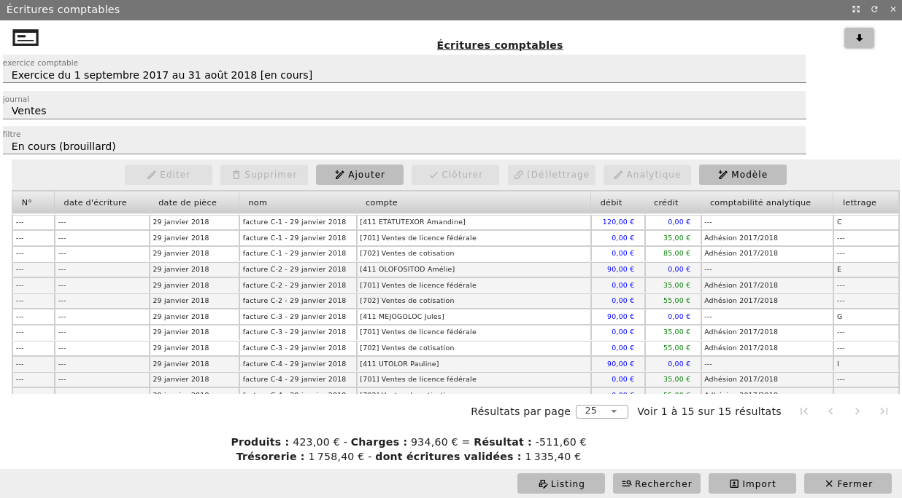
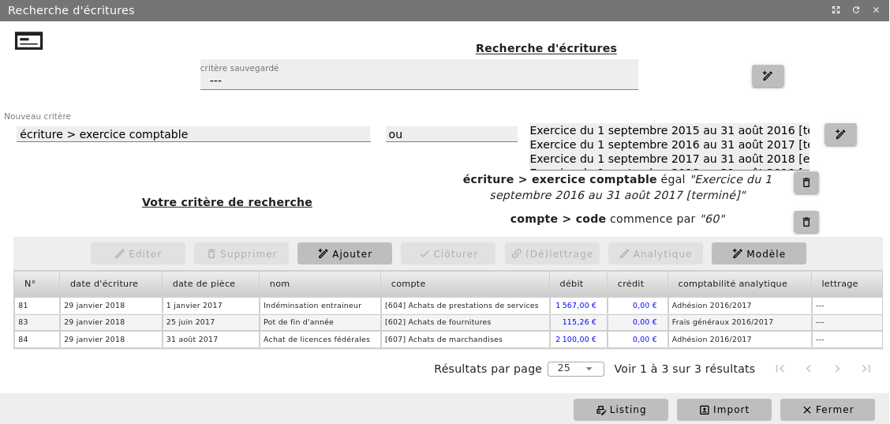
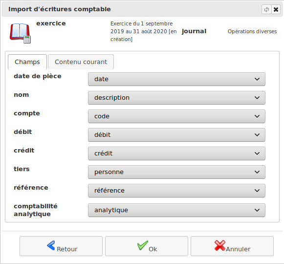

Écritures¶
Avant toute saisie d’écriture, assurez-vous de l’existence de vos journaux :
Menu Administration/Modules(conf.)/Configuration comptable onglet « Journaux »
De même, vous devez contrôler que votre plan comptable est à jour.
Menu Comptabilité/Gestion comptable/Plan comptable
Saisie d’une écriture¶
Cas général¶
Menu Comptabilité/Gestion comptable/Écritures comptables


Depuis cet écran, vous avez la possibilité de visualiser les écritures précédemment saisies et vous pouvez en ajouter de nouvelles. A l’écran, vous pouvez aussi consulter les écritures saisies après les avoir filtrées sur l’exercice comptable, un journal (ou tous) et/ou sur l’état des écritures :
Tout : aucun filtrage n’est appliqué
En cours (brouillard): seulement les écritures provisoires (non encore validées)
Validée : seulement les écritures déjà validées
Lettrée : seulement les écritures lettrées
Non lettrée : seulement les écritures non encore lettrées
Vous pouvez également indiquer un code comptable pour filtre les écritures associées.
Pour saisir une nouvelle écriture, cliquez sur le bouton « + Ajouter ». Sélectionnez le journal et saisissez la date de l’opération ainsi que le libellé de l’écriture (pièce et numéro…). Cliquez sur le bouton « Modifier ».
Pour chaque ligne de l’écriture :
Saisissez les premiers chiffres du numéro du compte devant être mouvementé et sélectionnez-le dans votre plan comptable. Un compte doit exister dans le plan comptable de l’exercice pour être mouvementable
Si demandé, sélectionnez le tiers et le code analytique de rattachement
Saisissez le montant au débit ou au crédit du compte spécifié
Cliquez sur le bouton « + Ajouter ».
Ceci fait, cliquez sur « Ok ». Vous ne pourrez valider la saisie de votre écriture que si elle est équilibrée (débits = crédits).
Après clôture de l’exercice comptable, il ne sera plus possible de passer une écriture sur l’exercice clos. Avant cela, prenez soin de passer vos dernières écritures.
Une écriture étant provisoire, le bouton « Inverser » vous permet d’inverser très facilement votre écriture si besoin. Quand on débute en comptabilité, on a parfois du mal à savoir si un compte doit être débité ou crédité. En saisie, lorsque vous débitez un compte fournisseur et créditez un compte de charge, un message vous alerte sur le fait que vous avez probablement saisi l »écriture d’un avoir ».
Comptabiliser un règlement¶
Un règlement peut être saisi manuellement comme précédemment. Mais bien souvent il est lié à une opération déjà comptabilisée (ex. achat, appel de fonds) et constatant une dette ou une créance.
Pour simplifier votre saisie, éditez l’écriture constatant la dette ou la créance réglée. Cliquez sur le bouton « Règlement » : l’application vous propose alors une nouvelle écriture partiellement remplie avec le compte du tiers débité (règlement de dette) ou crédité (règlement de créance). Il ne vous reste plus qu’à préciser sur quel compte financier (caisse, banque…) vous voulez imputer le règlement et à contrôler l’écriture générée après l’avoir complétée.
Une fois l’écriture de règlement validée via cette fonctionnalité, l’écriture d’origine de la dette ou de la créance et celle du règlement sont automatiquement associées. Les lignes concernant le compte de tiers seront lettrées automatiquement.
Écriture d’à-nouveaux¶
Après clôture d’un exercice comptable, l’écriture d’à-nouveaux est automatiquement générée lors de la phase d’initialisation de l’exercice suivant. Cette écriture, passée dans le journal « Report à nouveau », est automatiquement validée. A ce moment, vous pouvez être amené à saisir des opérations spécifiques comme par exemple la ventilation des excédents de l’année précédente.
Par contre, dans ce journal, vous ne pouvez pas enregistrer de charges ou de produits.
Lettrage d’écritures¶
Comme nous l’avons évoqué dans un précédent chapitre, il est fréquent que des mouvements enregistrés en comptabilité trouvent leur source dans une ou plusieurs opérations liées. Dans ce cas, les lignes d’écritures correspondantes peuvent être lettrées.
Toutefois, il y a des conditions pour que des lignes d’écriture soient lettrables :
Elles doivent concerner le même compte de tiers (fournisseur ou copropriétaire)
Pour être lettrables, le total des débits doit être égal au total des crédits
Soit les lignes sont d’un même exercice non clôturé (il faut donc lettrer les comptes de tiers avant clôture de l’exercice)
Soit les lignes sont sur deux exercices non clôturés qui ce suivent. Le lettrage sera alors temporaire (avec un « & » en suffix) et corrigé définitivement au moment de la clôture et du report à-nouveau.
Les lignes lettrées conjointement se voient attribuer le même code lettre.
Toute ligne lettrée peut être délettrée.
Validation d’écritures¶
Par défaut, une écriture est saisie au brouillard, ce qui permet de la modifier ou de la supprimer tant qu’elle n’est pas validée. Cette écriture doit être validée pour entériner votre saisie. En principe, cette validation est confiée à la personne en charge de la vérification de la comptabilisation des opérations.
Pour réaliser cette action, sélectionnez les écritures contrôlées et cliquez sur le bouton « Clôturer »: L’application affectera alors un numéro aux écritures validées ainsi qu’une date de validation.
Une fois validée, une écriture devient non modifiable : ce mécanisme assure le caractére intangible et irréversible de votre comptabilité.
Comme l’erreur est humaine, l’écriture validée ne pouvant pas être modifiée ou supprimée, vous devrez procéder comme suit :
1 : Contrepasser l’écriture erronée en créant une écriture inverse pour l’annuler. Le libellé doit spécifier la référence de l’écriture annulée avec la mention « Contrepassation… »
2 : Enregistrer l’écriture correcte
Avant clôture de l’exercice comptable, toutes les écritures doivent étre validées.
Recherche d’écriture(s)¶
Depuis la liste des écritures, le bouton « Recherche » vous permet de définir les critères de recherche d’écritures comptables.


En cliquant sur « Recherche », l’outil va rechercher dans la base toutes les écritures satisfaisant aux critères saisis. La ou les écritures extraites pourront être :
Imprimées
Éditées/modifiées
Clôturée, lettrées ou délettrées…
Import d’écritures¶
Depuis la liste des écritures, le bouton « Import » vous permet d’importer des écritures comptables depuis un fichier CSV, ODS ou XLS.
Après avoir sélectionné l’exercice d’import, le journal et les informations de format de votre fichier, vous devez associer les champs des écritures aux colonnes de votre document (la première ligne de votre document doit décrire la nature de chaque colonne).


Vous pouvez alors contrôler vos données avant de les valider. L’import réalisé, l’outil vous présentera le résultat des écritures réellement importées.
Notez que les lignes d’écritures ne seront pas importées si :
Le code comptable précisé n’existe pas dans le plan comptable de l’exercice
La date n’est pas inclue dans l’exercice comptable actif
Le principe de la partie double n’est pas respecté car pour toute opération, le total des débits doit être égal au total des crédits
Bien que cela ne bloque pas l’import, le tiers et le code analytique seront laissés vides si ceux indiqués ne sont pas référencés dans votre dossier comptable. Vous devez donc contrôler l’importation et la modifier si besoin.